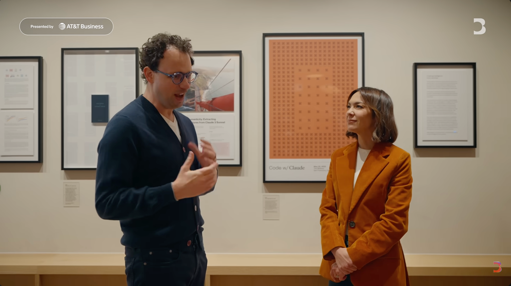

为什么读这篇：
- 想判断 AI 行业未来 1—3 年的走向：这里有全球最赚钱 AI 公司掌门人对算力、收入增速、模型能力边界的内部数字。
- 关心 AI 会不会抢走你的工作：他是唯一给出量化判断（“半数初级白领岗位”）并因此被围攻、却不改口的人。
- 想看 顶级 CEO 如何做取舍：他同时面对五角大楼、总统禁令、万亿估值和 25% 文明风险，每个问题都给了真实答案。
- 正在追踪 Anthropic：估值近万亿超 OpenAI、Q1 收入环比 3 倍、Mythos 暂缓发布，关键信息都在此。
源素材：Bloomberg《The Circuit》70 分钟加长访谈
Inside the Mind of Anthropic CEO Dario Amodei | The Circuit | Extended Interview
观看原访谈
五年前，Dario Amodei 带着六个人离开 OpenAI，硅谷把这件事当成又一个“理念不合分家”的八卦。五年后，他的公司估值接近一万亿美元，收入超过 OpenAI，2026 年第一季度收入环比翻了三倍——然后他做了两件让所有商学院案例库失效的事：公开主张对华芯片出口管制，哪怕 NVIDIA 是他的投资人；拒绝五角大楼的两个军用场景，哪怕代价是被总统逐出联邦政府、被列为“供应链风险”，合同拱手让给 OpenAI。
Emily Chang 在 The Circuit 里问了他 70 分钟。这场访谈的价值不只在信息增量，而在于：AI 行业当下最有权势的人，是如何进行思考的。
硅谷流传五年的版本是“安全理念分歧”。Dario 当场拆掉了这个版本：安全上的分歧哪里都有，“那本身不足以离开”。真正的原因是信任崩塌——
“当你觉得你不能信任某个人，当你觉得他们的价值观和他们宣称的不一样，当你觉得他们不诚实，当你看到令人不安的行为模式……继续和这家公司共事就变得非常难。” [00:06:32]
“道不同不相为谋。让市场裁决，让舆论裁决——这比任何关于谁为什么离开的八卦都响亮。” [00:07:21]
编者注：这是他对 OpenAI 最直白的一次公开表态。对照阅读：同一时期他对 Google DeepMind 的 Demis Hassabis 的评价是“认识 15 年、互相启发” [00:08:57]。他并非不容异见，而是把行业玩家明确分成“可信”与“不可信”两类，策略是让可信者结盟、倒逼其余跟进。理解这条线，才能理解他后面所有决策，包括军事红线的内在一致性。
为什么别人做消费级爆款时，Anthropic 赌编码和企业市场？他的回答把问题升了一级：商业模式必须与价值观兼容，否则“要么背叛价值观，要么变得无足轻重” [00:11:29]。
消费级的激励是广告逻辑——“最大化你付出的分钟数”，他直接点名 AI 视频 slop [00:12:01]。而 Anthropic 想做的事：治病、能源、教育、发展中世界健康，几乎全是企业级场景。
支撑这个判断的是一组硬数字：
编者注：注意他的护城河观：“模型质量是唯一重要的东西，我们从不依赖用户粘性” [00:14:01]。这句话在“一下午就能切换模型”的行业里，是最大的自信，也是最大的赌注。
Claude Cowork 发布当晚，2850 亿美元软件市值蒸发，交易员称之为 “SaaSpocalypse” [00:14:32]。Dario 对软件公司的建议冷静到残忍：
“如果你的护城河是‘我们写了别人写不了的复杂软件’——祝你好运。” [00:15:18]
能活下来的是客户关系、领域 know-how、行业知识。他的总判断是：软件行业蛋糕会变大，“但会有大输家” [00:16:17]。
就业问题上，他维持一年前的量级判断：1—5 年内，半数初级白领岗位可能受冲击；并揭示了冲击的机械原理——生产率驼峰。自动化 90% 的工作时，剩下 10% 的人杠杆放大 10 倍、更值钱；但曲线会逼近 100%，“然后你必须给人找别的事做” [00:29:26]。
这不是预言，是 Anthropic 内部正在发生的事：AI 已写几乎所有代码，工程师整体更有产出，但已出现“对某些人，AI 直接做得更好”的苗头。
当 Jensen Huang 批评他“混淆任务与工作”、有人指控这是“doom marketing”时，他在访谈里动了真气：
“说我在做廉价营销的人，他们自己才在做廉价营销。这是懒惰，是拒绝面对严肃的思考工作。” [00:36:02]
“社交媒体的三秒剪辑文化是硅谷的病。谁再这么说，我就少信谁一分。” [00:36:37]
编者注：这段失控是全场情绪最高点，也是理解他的钥匙。他写了五页纸区分“任务”与“工作”、列出六类解决方案：token 税、宏观政策、企业转岗、慈善；而世界只转发了三秒。对读者而言重要的是，他的应对建议不是“别慌”，而是“蛋糕在扩大，关键是匹配速度”——物理世界、人际关系型工作、指挥 AI 的角色是三个去向 [00:33:22]。
全场最锋利的交锋。事实层：Anthropic 是首个在美军涉密网络上运行的 AI 公司；同时拒绝两个场景——大规模监控、全自主武器；代价是总统禁令、供应链风险标签，以及 OpenAI 接手合同 [00:39:44]。
然后 Emily Chang 抛出了那个问题：Bloomberg 报道 Claude 经 Palantir 系统用于对伊朗的 AI 辅助目标选择，2 月一枚导弹击中女子学校，150 多人死亡，多为儿童——Claude 参与了吗？ [00:43:46]
他的回答没有躲，但把问题拆成两半：他不知情；而“人类做了最终决定，不是 Claude” [00:45:13]。这正是他们死守红线的意义。如果当初在全自主武器上让步，“几乎所有其他公司现在都让步了”，这类错误会多 100 倍。
“你问的是，你信不信这个国家。我是爱国者。” [00:42:28]
“但如果民主国家去做大规模监控和全自主武器，那民主国家赢了也不值得。” [00:38:45]
编者注：这段话的道德复杂性值得完整呈现而非压缩。他同时说“Claude 帮助美军每天打击目标从 1000 个到 5000 个，我支持这种能力”和“150 个孩子死了，这太可怕了”。他拒绝给你一个简单立场，只给出一个原则：供应商设高层价值边界，具体军事行动留给决策者；“就像你不能规定 Excel 能用于哪次行动”。AI 战争会阻止还是引发三战？“总体更可能阻止它，前提是我们对使用方式设限” [00:47:03]。
信息密度最高的一段。Mythos 能自主走完整条网络杀伤链——不只是找漏洞，还能把漏洞变成可用的 exploit [00:48:37]。拿到早期权限的企业反过来求 Anthropic 别发布：
“这是一件超级武器。你们应该要求持枪证才能用它。求你们别放出来。” [00:48:59]
实证：在 Firefox 发现271 个此前无人发现的漏洞，私营企业代码库里还有数千个 [00:51:21]。对“开源模型能复现”的质疑，他的反驳一针见血：有人把 Mythos 找到的那行代码指给开源模型看，它当然也能找到；“可真正的问题是在整个代码库里找到那根针” [00:50:50]。
对“PR 作秀”论，他的回答是：“不发布这个模型让我们商业上损失惨重” [00:51:51]。他的终局观反而乐观：漏洞是有限的，“表面只有那么多洞，补完它就固若金汤”——6—12 个月后，互联网生态会比过去安全得多 [00:52:13]。掣肘也是真实的：客户和国家天天要权限，美国政府和安全团队在踩刹车。
收尾部分是他世界观的完整暴露：
Emily Chang 的类比逼问是全场最好的一个问题：
“如果一架飞机有 25% 的概率坠毁，你不会登机。”
“没错。25% 太高了。我们的工作就是把这个概率降得低得多。” [01:07:22]
他最爱的书是《原子弹秘史》，但自认的人物不是奥本海默，而是最早想到链式反应、后半生都在为核风险奔走的 Leó Szilárd：“奥本海默在我看来是失败案例：不能靠站在中心的大人物，必须靠无处不在的制衡” [01:05:09]。
最后一个问题：“你在建造无比强大的东西并将从中获得巨大利益，我们凭什么信你？”他没有给出保证，只给出账本：Mythos 延迟、主动切断中国业务损失数亿美元、Claude 2 延迟发布。“把整体历史加起来，看哪个假设与之一致。人们自己会判断。” [01:08:39]
| 数字 | 内容 | 时间戳 |
|---|---|---|
| 约 1 万亿 | 估值，高于 OpenAI | [00:18:28] |
| 3 倍/季 | 2026 Q1 收入环比（年化 80 倍 vs 规划 10 倍/年） | [00:20:05] |
| 2850 亿美元 | Cowork 发布后蒸发的软件市值 | [00:14:32] |
| 50% | 1—5 年受冲击初级白领岗位量级 | [00:28:15] |
| 271 个 | Mythos 在 Firefox 发现的新漏洞 | [00:51:21] |
| 1000 → 5000 | 美军日打击目标数（LLM 辅助后） | [00:41:47] |
| 20%—30% | AI 对 Anthropic 研发效率的当前提升 | [01:03:46] |
| 10%—25% | 他估计的文明崩溃概率 | [01:05:54] |
| 数亿美元 | 主动切断中国业务的代价 | [01:08:29] |
AI 不练腿，保持好奇，保持真实。祝你牛逼，也谢谢你看到这里。
